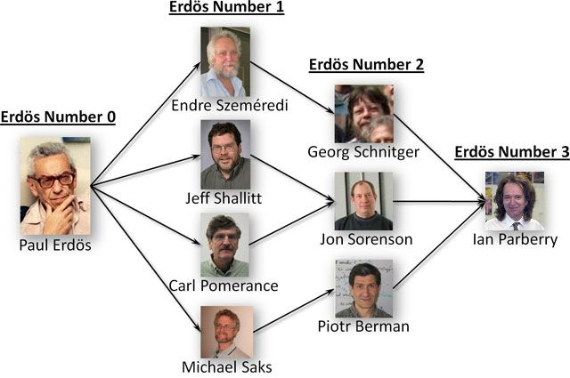

Citation indices
are used to measure the impact of an author's
academic publications by quantifying, in various ways, the number of
citations
that they generate.
The following were measured on August 14, 2019 using
Google Scholar.
- h-index
-
My
h-index is 28,
which means that 28 of my papers have been cited 28 or more times.
- i10-index
-
My i10-index
is 60, which means that 60 of my publications have been cited 10 or more times.
The following were measured on August 14, 2019 using
Harzing's
Publish or Perish
using data from
Google Scholar.
- g-index
-
The g-index
is an alternative to the h-index.
My
g-index is 49,
which means that 49 of my publications have together been cited a total
of 492=2,401 times.
- hI,norm-index
-
The
hI,norm-index
is a version of the h-index that normalizes for
number of co-authors per paper so that the impact of scholars in different
disciplines can be compared.
My hI,norm-index is 21.
- hI,annual-index
-
The
hI,annual-index
is a version of the h-index that normalizes for length of career.
My hI,annual-index is 0.55,
which means that I have published an "impactful" paper (defined
to be those that have accumulated enough citations to be included in
my h-index) every 1.8 years on average.
Your Erdös number
is defined as follows.
Paul Erdös has Erdös number 0.
If the smallest Erdös number of the coauthors of
your research papers is i, then
your Erdös number is i+1.
My Erdös number is 3,
at least four different ways:
-
Paul Erdös, Endre Szemerédi, Georg Schnitger,
Ian Parberry
-
Paul Erdös, Jeff Shallit, John Sorenson,
Ian Parberry
-
Paul Erdös, Carl Pomerance, John Sorenson,
Ian Parberry
-
Paul Erdös, Michael Saks, Piotr Berman,
Ian Parberry

Citations for Erdös number 1:
-
Miklos Ajtai, Paul Erdös, Janos Komlós, and Endre Szemerédi,
"On Turán's theorem for sparse graphs",
Combinatorica, Vol. 1, No. 4, pp. 313-317, 1981.
-
Paul Erdös and Jeff Shallit, "New bounds on the length of finite Pierce and Engel series",
Sém. Théor. Nombres Bordeaux (2) Vol. 3, no. 1, pp. 43-53, 1991.
-
Paul Erdös and Carl Pomerance, "On the largest prime factors of n and n+1" Aequationes Math.,
Vol. 17 no. 2-3, pp. 311-321, 1978.
-
Paul Erdös, Michael Saks, and Vera Sós,"Maximum induced trees in graphs",
J. Combin. Theory Ser. B, Vol. 41, no. 1, 61-79, 1986.
Citations for Erdös number 2:
-
Wolfgang Maass, Georg Schnitger, Endre Szemerédi, and György Turán,
"Two tapes versus one for off-line Turing machines", Computational Complexity, Vol. 3 , no. 4, pp. 392-401, 1993.
-
Piotr Berman, Avrim Blum, Amos Fiat, Howard Karloff, Adi Rosén,
and Michael Saks, "Randomized robot navigation algorithms", Proceedings of the seventh annual ACM-SIAM symposium on Discrete algorithms, pp. 75-84, 1996.
-
Carl Pomerance and Jonathon Sorenson, "Counting the integers factorable via cyclotomic methods", Journal of Algorithms, Vol. 19, pp. 250-265, 1995.
-
Jeffrey Shallit and Jonathon Sorenson, "A binary algorithm for the Jacobi symbol", ACM SIGSAM Bulletin, Vol. 27, No. 1, Jan. 1993.
Citations for Erdös number 3:
-
Piotr Berman, Ian Parberry, and Georg Schnitger, "A Note on the Complexity of Reliability in Neural Networks", IEEE Transactions on Neural Networks, Vol. 3, No. 6, pp. 998-1002, 1992.
-
Jonathon Sorenson and Ian Parberry, "Two Fast Parallel Prime Number Sieves", Information and Computation, Vol. 114, No. 1, pp. 115-130, 1994.
Your Bacon number
is defined as follows.
Kevin Bacon
has Bacon number 0.
If the smallest Bacon number of the actors in movies
in which you have acted is i, then
your Bacon number is i+1.
My Bacon number is 3 because I was
an extra in the film
Necessary Roughness
which
starred
the actor
Scott Bakula,
who has Bacon Number 2 (you can check
this using the Oracle of Bacon).
Your Erdös-Bacon Number
is the sum of your
Erdös number
and your Bacon number.
Very few people have a finite Erdös-Bacon number;
Wikipedia
lists just 9 scientists (not including me) and 5 actors.
Since my Erdös number
and my Bacon number are both 3, my Erdös-Bacon
number is 6, putting me alongside luminaries such as
the cosmologist
Carl Sagan,
physicists
Richard Feynman and
Stephen Hawking,
and the actor
Danica McKellar.
I am not worthy.
{kind=link}
{kind=link}